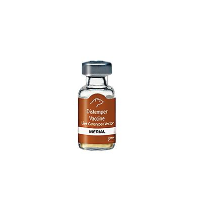

ESSENTIAL VACCINES FOR YOUR SHIH TZU
CORE VACCINES (Essential for all your Dogs)
NO.1
RABIES VACCINE
Canine Rabies Vaccination: Essential Information
Rabies is a fatal viral disease affecting the nervous system of mammals, including dogs and humans. Vaccination against rabies is crucial for preventing the disease and safeguarding public health.
Vaccine Classification
Rabies vaccination is often mandated by law in various regions due to its significance in preventing transmission to humans. While core vaccines typically include those against canine distemper virus, canine adenovirus-2, and canine parvovirus, rabies vaccination is considered essential and is legally required in many areas.
Vaccination Schedule
Puppies should receive their initial rabies vaccination at 12 to 16 weeks of age, followed by a booster one year later. Subsequent boosters are administered every one to three years, depending on local regulations and vaccine type.
Importance of Vaccination
Rabies vaccination is vital for preventing a disease that is nearly always fatal once symptoms appear. By vaccinating dogs, we protect them and reduce the risk of transmission to humans and other animals, contributing to public health and safety. Adhering to recommended vaccination schedules and local regulations ensures the well-being of both canine companions and the community.

NO.2
CANINE DISTEMPER VACCINE

Canine Distemper Vaccination: Essential Information
Canine distemper is a highly contagious viral disease affecting dogs' respiratory, gastrointestinal, and nervous systems. Vaccination is crucial for prevention.
Vaccine Classification
The canine distemper vaccine is considered a core vaccine, essential for all dogs due to the severity and widespread nature of the disease.
Vaccination Schedule
Puppies should receive their first distemper vaccination at 6 to 8 weeks of age, followed by boosters every 2 to 4 weeks until they are 16 weeks old. Adult dogs with unknown vaccination histories should receive at least one dose, with a booster after one year. Subsequent boosters are typically administered every three years, depending on the vaccine and local regulations.
Combination Vaccines
The distemper vaccine is often combined with other vaccines, such as those for adenovirus-2 and parvovirus, into a single injection known as the DAP or DA2P vaccine.
Importance of Vaccination
Vaccinating against canine distemper is vital to prevent a disease that can cause severe illness or death. Maintaining an appropriate vaccination schedule ensures the health and well-being of dogs and helps prevent the spread of this contagious virus.
Consulting with a veterinarian is essential to establish a vaccination plan tailored to a dog's specific needs and circumstances.
NO.3
CANINE PARVOVIRUS VACCINE
Canine Parvovirus Vaccination: Essential Information
Canine parvovirus (CPV) is a highly contagious and potentially fatal viral disease affecting dogs, particularly puppies. Vaccination is crucial for prevention.
Vaccine Classification
The canine parvovirus vaccine is considered a core vaccine, essential for all dogs due to the severity and widespread nature of the disease.
Vaccination Schedule
Combination Vaccines
The parvovirus vaccine is often combined with other vaccines, such as those for distemper and adenovirus-2, into a single injection known as the DAP or DA2P vaccine.
Importance of Vaccination
Vaccinating against canine parvovirus is vital to prevent a disease that can cause severe illness or death. Maintaining an appropriate vaccination schedule ensures the health and well-being of dogs and helps prevent the spread of this contagious virus.
Consulting with a veterinarian is essential to establish a vaccination plan tailored to a dog's specific needs and circumstances.
NO.4
CANINE ADENOVIRUS VACCINE
Canine Adenovirus Vaccination: Essential Information
Canine adenoviruses are classified into two types:
Vaccine Classification
The vaccine targeting canine adenovirus is considered a core vaccine, essential for all dogs due to the severity and widespread nature of the diseases caused by these viruses.
Vaccination Strategy
To protect against both CAV-1 and CAV-2, the following approach is employed:
Vaccination Schedule
Combination Vaccines
The adenovirus vaccine is often combined with other vaccines, such as those for distemper and parvovirus, into a single injection known as the DAP or DA2P vaccine.
Importance of Vaccination
Vaccinating against canine adenoviruses is vital to prevent diseases that can cause severe illness or death. Maintaining an appropriate vaccination schedule ensures the health and well-being of dogs and helps prevent the spread of these contagious viruses. Consulting with a veterinarian is essential to establish a vaccination plan tailored to a dog's specific needs and circumstances.